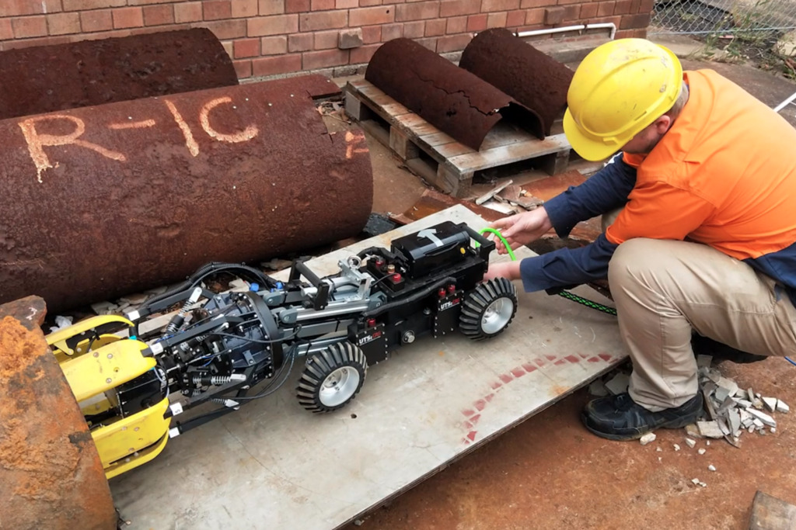

Professional Experiences
My professional employment involves engineering related activities involved with the assembly, integration, and testing of spacecraft, supporting facilities and systems. Previous employment involved developing, testing and deploying novel robotic sensing solutions for industry partner Sydney Water. Additionally, mechanical and electrical design for autonomous mobility research project, placing top 3 in class at the Dubai Congress for Self Driving Transport.
Undergraduate Engineer involved with the assembly, integration, and testing (AIT) of spacecrafts, facilities and systems.
Contributions include:
Design, manufacturing, and testing of printed circuit boards.
Firmware development utilising C, C++, LUA programming languages.
Documentation including scope of work, test specification and supporting documents.
Procurement of components and hardware.
I have designed a range of circuits incorporating analog to digital conversion, 4-20mA current loop, load cell, thermocouple and accelerometer signal conditioning, enabling valuable hands on experience with Altium Designer and KiCAD electronic design automation software.

Designing, building and operating pipe inspection robots in partnership with Sydney Water. Modeling and verification of sensing technology using Matlab and ROS. Modelling with Solidworks and AutoCAD. Calculating power requirements and suitable components for robotic
systems. Software development using ROS, C++.

Mechanical lead for the self-driving mobility PhD project. The project received third in the academic category of the Dubai World Challenge for Self-Driving Transport 2019.
Read about the submission here.